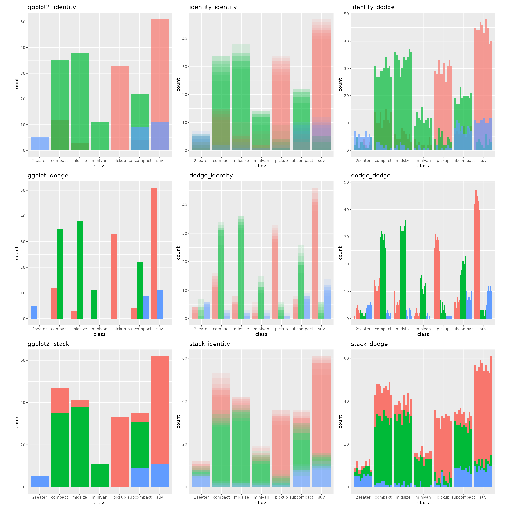

Position Nesting
One of the most powerful features of ggdibbler is the
ability to do nested positions. That is, you can control the
overplotting in the original plot, and the over plotting caused
by resampling using separate positions. This can create some interested
graphics.
Below is a grid of box plots. The first column is the original ggplot
we are going to add uncertainty to, the second and third column is the
effect of the overplotting being managed with an nested identity (with
decreased alpha) and dodge positions respectively. The syntax of the
nested positions is mainposition_nestedposition, where the
main position is what was in the original ggplot, and the nested
position manages the overplotting caused by sampling from the
distribution.
# ggplot IDENTITY
p1 <- ggplot(mpg, aes(class)) +
geom_bar_sample(aes(fill = drv),
position = "identity", alpha=0.7)+
theme(legend.position="none", aspect.ratio = 1) +
ggtitle("ggplot2: identity")
# ggdibbler identity
p2 <- ggplot(uncertain_mpg, aes(class)) +
geom_bar_sample(aes(fill = drv), alpha=0.1,
position = "identity_identity")+
theme(legend.position="none", aspect.ratio = 1)+
ggtitle("identity_identity")
p3 <- ggplot(uncertain_mpg, aes(class)) +
geom_bar_sample(aes(fill = drv), alpha=0.7,
position = "identity_dodge")+
theme(legend.position="none", aspect.ratio = 1)+
ggtitle("identity_dodge")
# ggplot dodge
p5 <- ggplot(mpg, aes(class)) +
geom_bar_sample(aes(fill = drv),
position = position_dodge(preserve="single"))+
theme(legend.position="none", aspect.ratio = 1)+
ggtitle("ggplot: dodge")
p6 <- ggplot(uncertain_mpg, aes(class)) +
geom_bar_sample(aes(fill = drv), alpha=0.1,
position = "dodge_identity")+
theme(legend.position="none", aspect.ratio = 1)+
ggtitle("dodge_identity")
p7 <- ggplot(uncertain_mpg, aes(class)) +
geom_bar_sample(aes(fill = drv),
position = "dodge_dodge")+
theme(legend.position="none", aspect.ratio = 1)+
ggtitle("dodge_dodge")
# ggplot stack
p9 <- ggplot(mpg, aes(class)) +
geom_bar_sample(aes(fill = drv),
position = "stack")+
theme(legend.position="none", aspect.ratio = 1)+
ggtitle("ggplot2: stack")
p10 <- ggplot(uncertain_mpg, aes(class)) +
geom_bar_sample(aes(fill = drv), alpha=0.1,
position = "stack_identity")+
theme(legend.position="none", aspect.ratio = 1)+
ggtitle("stack_identity")
p11 <- ggplot(uncertain_mpg, aes(class)) +
geom_bar_sample(aes(fill = drv),
position = "stack_dodge")+
theme(legend.position="none", aspect.ratio = 1)+
ggtitle("stack_dodge")
(p1 | p2 | p3 ) / (p5 | p6 | p7) / (p9 | p10 | p11)